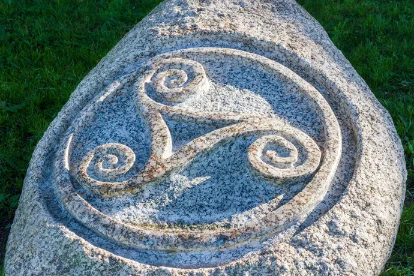

Raíces
Cultura celta
O Celta ten raíces tanto na cultura celta como na galega, aínda que estas veñan un pouco da man, imos analizar primero a relación máis clara con Galiza, sendo esta vista no escudo que é unha cruz de Santiago. Logo, por parte da cultura celta vense moitos símbolos que o relacionan coma o trisquel ou dentro da propia afección os disoltos "Celtarras" que eran un grupo máis radical ou as actuais "Tropas de Breogán", quen era unha figura mítica da cultura galega e celta, sendo este o rei de Brigantia (actual Coruña).
Outra parte da cultura celta que vemos no clube foi o uso do Karnyx na previa dalgúns partidos do Celta, este era unha especie de corno de guerra que usaban os celtas para asustar aos seus inimigos e alentar aos aliados, tocábase non coma unha melodía senón coma un forte soplido que xeraba un forte bramido, tinha na punta forma de xabaril, xeralmente, que actuaba como modificador e amplificador de ton.

